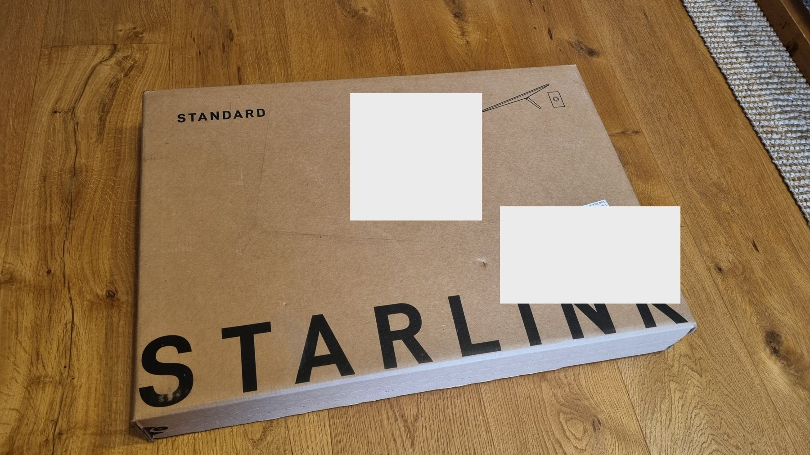
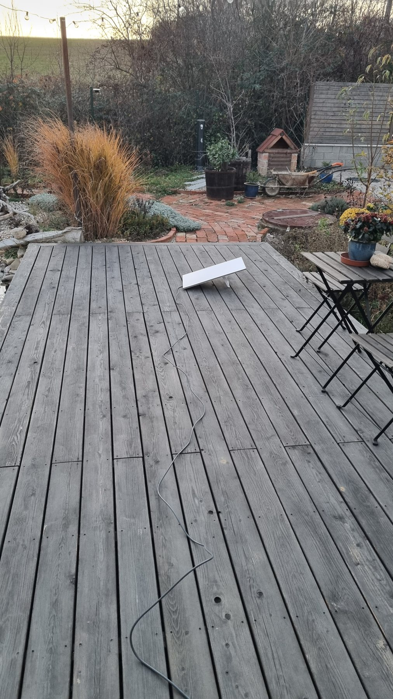
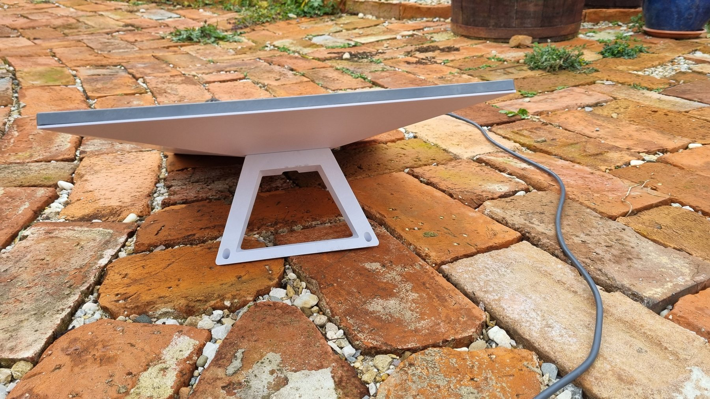
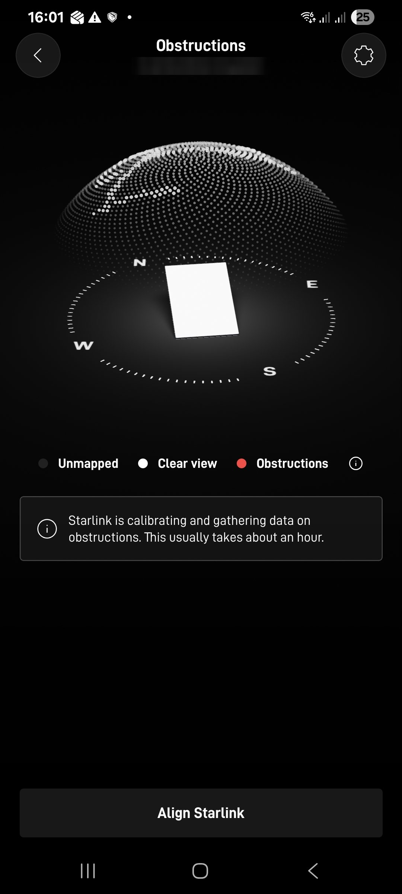
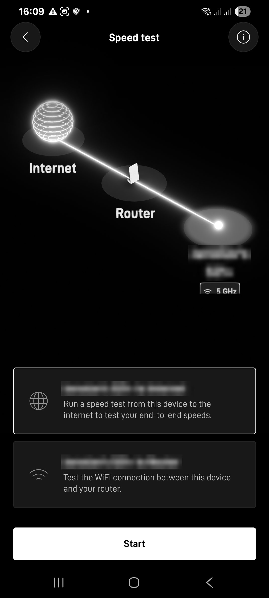

Anténa
Hlavná časť systému. Obsahuje elektroniku a sama sa natáča k satelitom.
Satelitný internet · neoficiálny sprievodca
Kúpil som si Starlink a vyskúšal ho v praxi. Na jednom mieste som zhrnul, čo to je, ako to funguje, čo je v balení a či to za to stojí – aj s fotkami z reálnej inštalácie.
Objednávka cez môj odkaz vám prinesie výhodu – pozrite si detaily. Ak službu využijete aspoň dva mesiace, dostanete 45 € a ja tiež.
Výhoda pre vás
45 € pre vás. 45 € pre mňa.Ak si Starlink objednáte cez môj odkaz a budete službu využívať aspoň dva mesiace, dostanete odmenu 45 €. Rovnakú odmenu dostanem aj ja – takže z odporúčania majú osoh obaja.
Odmena sa viaže na dvojmesačné používanie služby. Presné podmienky a spôsob pripísania určuje Starlink a môžu sa meniť – overte si ich pri objednávke na starlink.com.
Základy
Starlink je služba satelitného internetu od spoločnosti SpaceX. Na rozdiel od klasických satelitov, ktoré sú vo výške približne 36 000 km, lietajú satelity Starlink iba niekoľko stoviek kilometrov nad Zemou (tzv. nízka obežná dráha). Signál preto nemusí cestovať tak ďaleko a internet je podstatne rýchlejší a s menším oneskorením.
Vďaka tomu sa dá Starlink využiť aj na videohovory, online hry či streamovanie – čo pri starších satelitných službách bolo problematické.
Je to ideálne riešenie všade tam, kde nie je optika, kábel ani dobrý signál LTE: chata, dedina, záhradný domček, karavan či prevádzka mimo mesta.
Princíp
Malá anténa (v balení ju volajú „Starlink Kit“) sa sama natočí k oblohe a automaticky sleduje prelietavajúce satelity.
Tisíce satelitov obiehajú Zem a navzájom si odovzdávajú spojenie, takže vám vždy nejaký „visí“ nad hlavou.
Satelity posielajú dáta do pozemných brán, ktoré sú napojené na bežný internet.
Anténa je káblom prepojená so zdrojom a routerom. Ten rozdáva Wi‑Fi telefónom, televízorom aj počítačom.
V škatuli
Hlavná časť systému. Obsahuje elektroniku a sama sa natáča k satelitom.
Podstavec na položenie na zem, na plochú strechu alebo terasu. Na šikmú strechu či stenu sú dostupné aj samostatné montážne súpravy.
Rozdáva signál po byte. Má dva LAN porty na pripojenie počítača či TV káblom.
Napájací zdroj, 15 m kábel k anténe, 2 m kábel k routeru a napájací kábel do zásuvky 230 V.
Presná zostava sa môže líšiť podľa modelu a aktuálnej ponuky. Vždy sa riaďte tým, čo vidíte pri objednávke.
Zapojenie
Úprimne
Komu sa hodí
Ak už máte doma kvalitnú optiku, Starlink pravdepodobne nepotrebujete. Hodí sa tam, kde iné možnosti nie sú, sú pomalé alebo nespoľahlivé.
Z praxe
Fotky a snímky z mojej vlastnej inštalácie modelu Standard. Sériové čísla, adresu a ďalšie identifikačné údaje som zakryl.












Často kladené otázky
Áno, služba je u nás dostupná. Dostupnosť na konkrétnej adrese si overíte priamo pri objednávke zadaním adresy.
Rýchlosť sa líši podľa lokality, vyťaženia a zvoleného plánu. Zvyčajne ide o desiatky až stovky Mb/s pri odozve niekoľko desiatok milisekúnd. Ja som pri prvom teste cez Wi‑Fi nameral 208 Mb/s sťahovanie, 10 Mb/s nahrávanie a odozvu 34 ms (snímka vyššie).
Podmienky, ceny a prípadná viazanosť sa menia. Aktuálnu ponuku vždy skontrolujte pri objednávke a v obchodných podmienkach Starlink.
Vo všeobecnosti áno. Silný dážď alebo hustý sneh môžu spojenie dočasne zhoršiť. Anténa má vstavané vyhrievanie, ktoré dokáže topiť sneh.
Áno. Zariadenie je navrhnuté tak, aby ho zvládol aj laik – stačí zapojiť káble a postupovať podľa aplikácie.
Prekážky signál prerušujú. Aplikácia dokáže pomocou kamery telefónu zmerať, kde sú problémové miesta, a podľa toho vyberiete lepšie umiestnenie, prípadne vyšší stožiar.
Nie. Je to nezávislý projekt jednotlivca. Nie je spojený so spoločnosťami SpaceX ani Starlink.
Objednávka prebieha priamo cez Starlink. Ak použijete môj odkaz a službu budete využívať aspoň dva mesiace, dostanete 45 €. Rovnakú odmenu dostanem aj ja.
Prejsť na objednávku